VisiData: il coltellino svizzero per i dati, che probabilmente non conosci↵
VisiData è un fantastico strumento open source per esplorare e manipolare dati. Mette insieme la chiarezza di un foglio di calcolo, con l'efficienza del terminale e la potenza di Python, in una utility leggera in grado di gestire milioni di righe con facilità.
La presentazione ufficiale fa un'ottima sintesi, ma non evidenzia la cosa che mi ha colpito di più: quella di Saul Pwanson (il creatore di VisiData) è prima di ogni altra cosa una grande idea. Lo si capisce usandolo e spero che emerga anche dalle righe seguenti.
Per usarlo non è necessario essere uno sviluppatore; se si conosce un po' Python, sarà possibile usarlo in modo ancora più sorprendente.
Perché usarlo↵
- È rapido, apre quasi istantaneamente file di diverse decine di megabyte;
- è agile, rende semplice la ricerca, il filtraggio, l'ordinamento,il join e la ristrutturazione di dati tabellari;
- consente di avere in pochi passaggi una visione di insieme dei dataset su cui si vuole lavorare;
- apre molti dei formati tipici di testo strutturato (csv, tsv, xlsx , xls, json, xml, sqlite, shp, html, hdf5, xpt, sas7bdat, sav, dta)
- si utilizza soltanto da tastiera, ed è possibile dimenticarsi del mouse;
- è free ed open source.
Apprezzo molto la sua rapidità e come offra in modo agile una visione di insieme sui dati. Questo, affiancato all'utilizzo da tastiera, lo rende un prodotto che dà una marcia in più a chi lo usa.
Supportarne lo sviluppo↵
Se VisiData vi piacerà e lo utilizzerete, sarà cosa buona supportarne lo sviluppo con una donazione. Io ho deciso di farlo e di esserne un "patrono"!
Si fa da qui https://www.patreon.com/saulpw.
Come si installa↵
Per gli sviluppatori, per chi usa la riga di comando, è molto facile. È scritto in Python 3 e di base basta usare l'installer di Python:
pip3 install visidata
Per tutti gli altri, bisogna prima installare Python 3, poi aprire il terminale e lanciare il comando di sopra.
Su Windows non c'è ancora un supporto diretto. È però utilizzabile da chi ha Windows 10: c'è da installare il Windows Linux Subsystem (decine di guide per farlo), poi installare Python 3 nel sistema Linux e infine dare il comando di sopra dal terminale di Linux.
Cheat-sheet↵
Abbiamo tradotto in italiano il cheat-sheet di VisiData, creato da Jeremy Singer Vine, disponibile in HTML e PDF.
La versione fronte retro a cura di Gianni Vitrano↵
Gianni Vitrano di OpenDataSicilia a partire da questo cheat-sheet, ha creato la versione da stampare fronte retro a "libretto". Grazie Gianni!
10 Modi di usare Visidata↵
Dieci esempi rapidi, che mostrano cosa è possibile fare con VisiData. È una sezione a cura di Salvatore Fiandaca (grazie).
La guida↵
VisiData è un foglio elettronico a riga di comando. Potrebbe suonare come una contraddizione, perché si accosta qualcosa con interfaccia ricca (come un foglio elettronico) a qualcosa di visualmente molto minimale. In realtà questa è una delle idee forti di questa applicazione, che prende il meglio di questi due mondi: l'approccio a griglia e multi tabella del primo, e la rapidità, l'immediatezza, l'essere easy e "subito pronto" di un terminale.
Di base quindi bisogna prima aprire il terminale. Poi per aprire un file basta scrivere un comando con questa struttura:
vd nomeFile.csv
A seguire soltanto un piccolo estratto sul come usarlo. Per approfondire ho creato un elenco di URL consigliati.
VisiData si usa al 99% con la tastiera, quindi è bene che il Caps Lock non sia attivo: gli shortcut da tastiera non funzionerebbero correttamente (grazie Salvatore Fiandaca per la nota).
Un esempio di apertura di un file grande↵
"Grande" in informatica non vuol dire niente, è come "salato" con un piatto di pasta.
Un CSV grande per il mio PC (un notebook del 2015, con processore i7 e 8 GB di RAM) - se voglio lavorarci in modo "visuale" con un foglio elettronico - potrebbe essere già un CSV da 500000 righe, che mi si apre dopo 1 minuto e 15 secondi e dove un "trova e sostituisci" diventa operazione molto lunga (uso LibreOffice Calc).
Ci sono anche limiti che non sono personali. Se per esempio provassi a lavorare con uno dei dataset del "Parco Circolante dei veicoli" in Italia scoprirei dei limiti strumentali.
Un esempio con i dati dell'Abruzzo: con il comando da shell wc -l parco_circolante_Abruzzo.csv leggo che è composto da 1170439 righe.
Con una regione "piccola" come questa si va già oltre il limite di Calc, che è di 1048576 righe. Se voglio comunque visualizzare 1048576 righe di questo dataset, sul mio PC sono necessari circa 5 minuti.
Con VisiData lancio vd parco_circolante_Abruzzo.csv e lo visualizzo in 1 secondo. C'è il "trucco", che è invero una delle buone scelte del progettista: il file viene aperto in modo asincrono, caricandone subito una porzione navigabile. In basso a destra (vedi sotto) viene dato conto della percentuale di avanzamento che porterà alla piena apertura (meno di 15 secondi).
Questo essere "subito pronto" lo rende uno strumento di grande comodità, che l'ha portato a essere uno dei miei quotidiani.
Ribadisco però ancora un volta che il "grande" e la valutazione del tempo dipendono dagli obiettivi che si hanno, dalle proprie conoscenze di base e dall'hardware/software che si ha a disposizione.
Per chiudere la tabella aperta e Visidata si pigia q sulla tastiera.
NOTA BENE: questo file con i dati sul "Parco Circolante dei veicoli" in Abruzzo, verrà usato in questa guida come dataset di base. Ne ho pertanto creato una copia di backup qui.
Navigare tra i dati↵
Per muoversi tra le celle si usano le 4 frecce direzionali dalla tastiera o (come vim, da cui nell'uso da tastiera VisiData prende molta ispirazione) h,j,k,l.
Per muoversi in modo più esteso:
g + freccia in bassooppuregj, per andare all'ultima riga;g + freccia in altooppuregk, per andare alla prima riga;g + freccia a sinistraoppuregh, per andare alla colonna più a sinistra;g + freccia a destraoppuregl, per andare alla colonna più a destra;PageDownoppureControl + Shift + f, una pagina in giù;PageUpoppureControl + Shift + b, una pagina in alto.
NOTA BENE: g è il tasto per i comandi "globali".
Per muoversi tramite ricerca testuale, sfruttando le espressioni regolari:
/ + regex, cerca in avanti nella colonna corrente;? + regex, cerca indietro nella colonna corrente;g/ + regex, cerca in avanti in tutte le colonne;g? + regex, cerca indietro in tutte le colonne;
Con n e N si va avanti e indietro rispetto agli elementi di output del risultato della ricerca.
Infine per saltare a una determinata riga o colonna, rispettivamente zr e zc seguito dal numero di riga e colonna (la numerazione inizia da zero).
I fogli↵
In VisiData ci sono tre tipi di fogli:
- i fogli sorgente, con i dati che si è scelto di aprire con VisiData;
- i fogli derivati, come quelli derivanti da filtraggio o la tabelle con le frequenze (vedi sotto);
- i metafogli, che descrivono e definiscono i dataset caricati (come quello che descrive ad esempio le colonne di una tabella, o il "foglio dei fogli").
Il "foglio dei fogli" si apre con Shift + s e fornisce l'elenco (e alcune informazioni correlate) di tutti i fogli aperti. Selezionandone uno e pigiando Invio, quest'ultimo si aprirà.
Per rinominarne uno dal "foglio dei fogli", basta selezionarlo, premere e e inserire il nuovo nome e poi dare Invio. O in alternativa, se si è davanti al foglio che si vuole rinominare, premere la barra spaziatrice, scrivere rename-sheet, digitare il nuovo nome e infine pigiare su Invio.
Il foglio correntemente aperto si chiude con q.
Lavorare sulle righe↵
La cosa più importante da comprendere è come selezionarle e deselezionarle, perché molte delle operazioni vengono eseguite proprio su quelle selezionate.
I tasti principali di selezione sono:
s, per selezionare la riga corrente;u, per deselezionare la riga corrente;t, per invertire la selezione della riga corrente;gs, per selezionare tutte le righe;gu, per deselezionare tutte le righe;gt, per invertire i criteri di selezione per tutte le righe.

Selezione di righe tramite espressione regolare↵
| + termine da ricercare, seleziona tutte le righe in cui c'è corrispondenza per la colonna corrente;\ + termine da ricercare, deseleziona tutte le righe in cui c'è corrispondenza per la colonna corrente;g| + termine da ricercare, seleziona tutte le righe in cui c'è corrispondenza per una qualsiasi colonna;g\ + termine da ricercare, deseleziona tutte le righe in cui c'è corrispondenza per una qualsiasi colonna;,, dato il valore della cella selezionata, seleziona tutte le righe in cui per la colonna corrente c'è corrispondenza;g,, seleziona tutte le righe uguali a quelle corrente.
Se ad esempio:
- ci si sposta nella colonna
provincia_residenza - poi si pigia
|; - si digita
TERAMO; - si preme
Invio.
... si ottiene qualcosa come quella di sotto.

Selezione di righe tramite espressioni Python↵
È possibile fare una selezione di righe tramite un'espressione di Python (qui per approfondire sui concetti di base delle espressioni).
I comandi da tastiera sono:
z|, per selezionare tutte le righe in cui l'espressione è valida;z\, per deselezionare tutte le righe in cui l'espressione è valida.
Ad esempio seguendo questi step:
gu, per deselezionare tutto;z|, per attivare la selezione tramite espressione Python;- scrivendo
provincia_residenza == "PESCARA" and sesso == "F"; - e pigiando su
Invio.
... verranno selezionati tutti gli elementi in cui la provincia è "Pescara" ed il sesso è "F".
Selezione di righe tramite espressioni Python e regex↵
- si digita
z|; - si scrive l'espressione, come ad esempio
re.search("^1", FieldB) and re.search("^2", FieldA), ovvero tutte le righe in cui il campoFieldBinizia per1e il campoFieldAper2.
Selezionare un numero random di righe↵
- aprire una tabella;
- fare click sulla barra spaziatrice;
- scrivere
random-rows(si può scrivere anche soltanto ad esempiorane autocompletare conTAB) e premereINVIO; - scrivere il numero di righe random che si vogliono selezionare.
Spostare righe↵
Si fa con queste combinazioni:
Shift+j, per spostare la riga corrente verso il basso;Shift+k, per spostare la riga corrente verso l'alto.
Cancellare righe↵
dper cancellare la riga corrente;gdper cancellare le righe selezionate.
Modificare il contenuto↵
Questi i comandi di base:
e, per modificare la cella corrente;Enter, per chiudere la modifica;Control+c, per cancellare la modifica;Control+a, per andare a inizio linea;Control+e, per andare a fine linea;Control+k, per cancellare il contenuto a partire dalla posizione del cursore.
Lavorare sulle colonne↵
Ogni colonna in VisiData ha 3 attributi principali:
Name, il nome della colonna;Width, la larghezza a schermo della colonna (se impostata a 0, la colonna diventa invisibile);Type, per definire se contiene testi, numeri interi, numeri decimali, monete o date.
Il foglio delle colonne↵
In VisiData esistono i cosiddetti meta-fogli (vedi sopra): uno di questi è il foglio delle colonne, che elenca tutte le colonne e i relativi attributi di una tabella.
A partire dalla visualizzazione di una tabella, si apre con Shift+c.
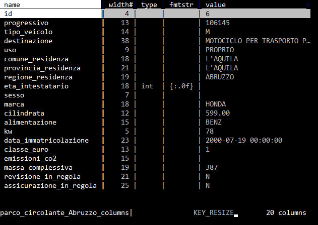
È una delle caratteristiche di VisiData che consente una rapida prima lettura del dato, che personalmente uso anche ad esempio per costruire brevi relazioni che contengono schema dati.
Impostare il tipo di campo↵
Come impostazione predefinita VisiData imposta a "testo" la tipologia di tutti i campi (che è quello che faccio di solito anche io alla prima apertura sia in un foglio elettronico che in Pandas).
Per definire il tipo di campo di una colonna della tabella che si sta visualizzando (cosa che consente di fare correttamente ad esempio operazioni di ordinamento, matematiche, ecc.), si deve navigare sino alla colonna su cui si vuole intervenire e poi pigiare:
#, per definire un campo con numeri interi (0, -1, 5000000)%, per definire un campo con numeri decimali (0.5, -3.14, 23.45557)$, per definire un campo con monete ($4.99, €20)@, per definire un campo con date (2018-04-06, April 6, 2018, 04/06/2018)~, per definire un campo di testo (qualsiasi cosa!)
Impostare numero di decimali in un campo floating↵
Di default i campi floating sono renderizzati con due decimali (la formattazione è impostata come %.02f).
Per modificare la cosa si può aprire il foglio delle colonne (SHIFT+c) e modificare il valore di formattazione delle colonna fmtstr (vedi sotto).
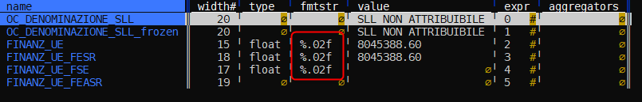
Per passare a tre decimali per un campo, basterà ad esempio modificare la cella della colonna di interesse da %.02f a %.03f (in edit di cella si va con il tasto e).
Se si vuole fare su più colonne:
- si apre sempre il foglio delle colonne;
- si selezionano le colonne di cui si vuole cambiare la formattazione;
- si va sulla colonna
fmtstr; - si va in modifica globale con
gee si inserisce il valore di formattazione desiderato; - si preme
INVIOper applicare la modifica.
Impostare formato data personalizzato↵
Se una cella contiene ad esempio la data 06/11/2020 (qui come 6 novembre 2020), e imposto la colonna come data con il tasto @, visidata la interpreta come 2020-06-11, ovvero come 11 giugno.
Per impostarla correttamente bisogna impostare un formato data personalizzato:
- si va sulla colonna con le date;
- si digita
z@e si preme INVIO; - si imposta il formato - in questo caso
%d/%m/%Y- e si preme INVIO.
In output si avrà 2020-11-06.
Rinominare le colonne↵
Per farlo si naviga sino alla colonna che si vuole rinominare e poi:
- si pigia
^; - si digita il nome che si vuole assegnare;
- si pigia
Invio.
Rinominare le colonne in blocco↵
Può essere utile ad esempio anteporre dei caratteri a tutte le colonne che iniziano per t.
Questi i passi:
- si apre il foglio colonne con
shift + c; - si va nella colonna con il nome delle colonne (è la prima);
- si digita
|, si scrive^te si pigiaINVIO(saranno selezionate tutte le colonne che iniziano con il caratteret); - si pigia
g*, per attivare il trova e sostituisci via regex; - si scrive
^(t.+)/TR_\1e poiINVIO.
Tutte le colonne che iniziano per t, avranno un nuovo nome corrispondente al precedente, con TR_ come prefisso. La colonna tabacco, diventerebbe ad esempio TR_tabacco.
Come espandere, ridurre e rimuovere colonne↵
Questi gli shortcut:
_, per espandere la larghezza della colonna corrente, alla larghezza massima del testo contenuto nella stessa, tenendo conto delle righe visualizzate a schermo;g_, per espandere la larghezza di tutte le colonne, alla larghezza massima del testo contenuto, tenendo conto delle righe visualizzate a schermo;z_ + n, per impostare la larghezza della colonna corrente ancaratteri;-, per nascondere la colonna corrente (viene impostata a 0 la sua larghezza);gv, per scoprire tutte le colonne nascoste;z-, per ridurre la larghezza della colonna corrente alla sua metà.
Spostare una colonna↵
Ecco come farlo:
Shift+h, sposta la colonna corrente di una posizione a sinistra;Shift+l, sposta la colonna corrente di una posizione a destra.
Modificare una colonna tramite un'espressione Python↵
A questa tabella si vuole assegnare al campo FieldA il valore di FieldB, tutte le volte che FieldA è vuoto.
| FieldA | FieldB |
|---|---|
| 1 | |
| 3 | |
| 1 | 12 |
Questa la procedura:
gsper selezionare tutte le righe;g=per scrivere l'espressione Python;- aggiungere come espressione
FieldB if FieldA=="" else FieldA.
Ovvero (FieldA) è uguale FieldB se FieldA non contiene nulla, altrimenti è uguale a se stesso (rimane invariato).
Calcoli per colonna↵
È possibile avere restituito, per una colonna, il risultato di uno dei calcoli di aggregazione disponibili:
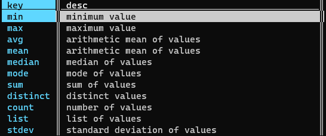
Ad esempio per avere la somma dei valori di una colonna con numeri interi:
- si imposta il tipo di colonna a numero intero (con
#); - si digita
z+e poiINVIO; - si digita
sume poiINVIO.
In basso, si leggerà il valore risultante.
NOTA BENE: se nessuna riga è selezionata si avrà il totale per colonna, altrimenti il calcolo sarà applicato per colonna alle sole righe selezionate.
Come definire una colonna chiave↵
Per ogni foglio è possibile definire una o più colonne chiave. Hanno due funzioni principali:
- rimangono fissate sul lato sinistro, quando si naviga orizzontalmente sulla tabella;
- hanno una funzione speciale quando si fanno certe operazioni (come quelle di JOIN, per alcuni conteggi, ecc.).
Per definire una colonna chiave (e vice-versa) si naviga sino alla colonna di interesse e si pigia !.
Manipolare le colonne dal foglio delle colonne↵
Il foglio delle colonne oltre a dare una visione di insieme, consente di fare delle rapide modifiche in blocco. È possibile spostare le colonne con Shift+j e Shift+k, rinominarle con e, impostare il tipo per tutte quelle selezionate, impostare la larghezza per tutte quelle selezionate.
Ad esempio a partire dal Parco Circolante dei veicoli dell'Abruzzo, il foglio colonne (Shift+c) appare in questo modo.
Se si vuole impostare a "numero intero" le colonne progressivo e eta_intestatario, bisognerà prima selezionarle con s.
Poi premere g#.
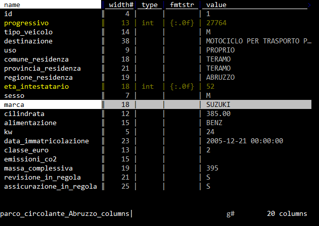
Creare una nuova colonna↵
Sono tre le modalità più comode:
- come risultato di un'espressione Python;
- come risultato di un comando di split;
- come risultato di estrazione di una porzione di testo da una colonna.
Nuova colonna tramite espressione↵
Ad esempio potrebbe essere utile creare una colonna vero/falso, per tutte le auto del Parco Circolante dei veicoli dell'Abruzzo, con cilindrata maggiore ai 643 (è un numero a caso). Per farlo:
- navigare sino alla colonna
cilindrata; - premere
%per impostarla come numero decimale; - pigiare su
=; - nel prompt in basso a sinistra scrivere
cilindrata > 643; - premere
Invio.
In output qualcosa come quella di sotto, con la nuova colonna risultato di un'espressione Python.
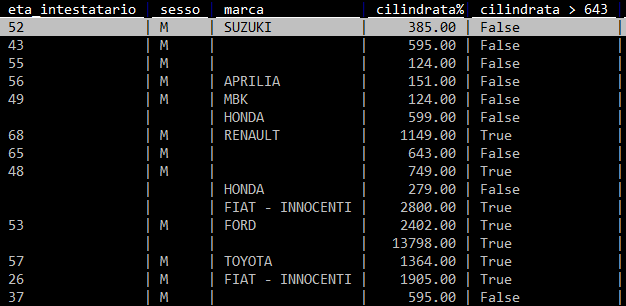
Nuove colonne come risultato di splitting↵
Si possono creare nuove colonne, come risultato di una suddivisione di una già esistente. Ad esempio nel campo data_immatricolazione è contenuta sia la data che l'orario, separati da spazio (i.e. 1995-04-03 00:00:00).
Se si vuole suddividerla in due colonne (data e orario), si può procedere in questo modo:
- si naviga sino alla colonna
data_immatricolazione; - si preme
:; - si sceglie la stringa di testo (definibile anche come espressione regolare) da usare come separatore e si scrive in basso a sinistra nel prompt. In questo caso è lo spazio;
- si digita quindi lo spazio e si dà
Invio.
Come output si avrà qualcosa come quella di sotto: due colonne frutto della divisione in più colonne, sfruttando come separatore lo spazio.
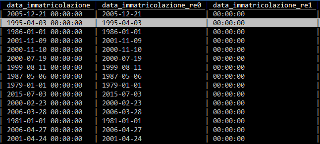
Nuove colonne come risultato di cattura e estrazione↵
Per farlo ci vogliono delle conoscenze di base sulle espressioni regolari (che sono una conoscenza propedeutica per chiunque lavori con i dati).
Se si vuole ad esempio estrarre l'anno dalla celle che contiene il valore 1995-04-03 00:00:00, basterà definire l'espressione regolare che estrae a partire dall'inizio della cella i primi 4 numeri. Che in termini di espressione regolare è ^[0-9]{4}.
Per creare una nuova colonna a partire dalla definizione di un'espressione regolare da usare come "estrattore", si procede in questo modo:
- si naviga sulla colonna
data_immatricolazione; - si pigia
;; - si scrive nel prompt in basso a sinistra
^([0-9]{4}). Sono state inserite le parentesi tonde, perché la cattura si fa a partire dalla definizione di un gruppo; - si pigia
Invio.
E si ottiene qualcosa come quella di sotto:
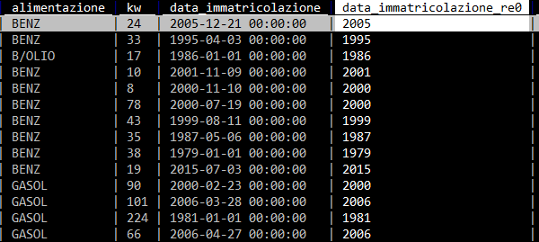
Trasformare una colonna tramite espressione regolare (trova e sostituisci)↵
Su ogni colonna è possibile fare delle trasformazioni basate su espressioni regolari. Se ad esempio si vogliono rimuovere dalle celle della colonna data_immatricolazione le informazioni sull'orario e passare quindi da 1995-04-03 00:00:00 a 1995-04-03 si può procedere in questo modo:
- si selezionano le righe su cui si vuole fare questa trasformazione (se sono tutte il comando è
gs); - si va nella colonna
data_immatricolazione; - si pigia su
g*; - si scrive nel prompt
.*$/. Il simbolo/in VisiData separa ciò che si cerca, da ciò con cui si vuole sostituire. Qui si cerca uno spazio (), seguito da qualsiasi carattere sino a fine cella (.*$), e si vuole sostituire con nulla; - si pigia
Invio(ci vorrà un po' di tempo, sono più di un milione di righe).
Il risultato sarà qualcosa come quella di sotto:
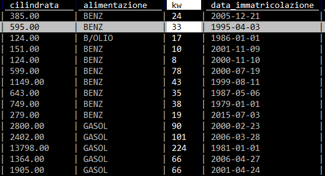
Questo è un "trova e sostituisci" per colonna.
Il foglio delle frequenze↵
Questa è una delle funzioni che uso di più ed è un'altra gran bell'idea. A partire da una colonna (o dalla combinazione di più d'una) è possibile - con Shift+f - aprire un foglio derivato, che contiene dei dati relativi al conteggio per valori distinti di quanto contenuto in quella colonna.
Se per esempio a partire dal Parco Circolante dei veicoli dell'Abruzzo, si volesse avere un'idea sulla distribuzione per "marca", basta navigare in vista tabella sino a quella colonna e poi pigiare Shift+f e avere qualcosa come quella di sotto.

I dati sono ordinati per conteggio ed emerge subito come una famosa marca nazionale da sola faccia ¼ del campione. Così come emerge che c'è un 5% di elementi in cui la marca non è definita e anche questa è un'informazione che ci potrebbe consentire da subito di prendere delle decisioni.
Molto comoda anche la colonna histogram che da visivamente in modo molto diretto un'idea del rapporto tra i numeri descritti in tabella.
Lavorare sulle celle↵
Fare un trova e sostituisci globale↵
Si parte dal selezionare le righe su cui si vuole eseguire l'operazione (se sono tutte il comando è gs).
Digitare gz* e poi scrivere stringa da trovare/stringa da sostituire e dare INVIO.
Se ad esempio volessi sostituire la stringa pal con mis, dovrei scrivere pal/mis.
È possibile usare anche le espressioni regolari.
Ordinare e filtrare↵
Ordinare righe↵
I tasti [ e ] ordinano i dati rispettivamente in modo crescente e decrescente, a partire dalla colonna attiva.
Filtrare righe↵
È possibile estrarre in vari modi un campione delle righe della tabella visualizzata. Quello di base è a partire dalla selezione delle righe (in uno dei modi visti sopra) e poi pigiare ". Ad esempio si naviga sino alla colonna marca, si preme |, si scrive chevr, si pigia Invio (vengono selezionati tutti i record associati a CHEVROLET) e infine si preme ". Si avrà una tabella filtrata, con gli 8814 record relativi a questa marca per l'Abruzzo.
Oppure posso farlo a partire da un "foglio delle frequenze" (vedi qui):
- si naviga sino alla colonna
marca; - si pigia
Shift+f, che mi da in output il conteggio dei valori distinti per marca (sono più di un milione di record, ci vorrà un po' di tempo); - si scorre sino alla riga che contiene la marca che si vuole filtrare;

- si pigia
Invioe si avrà una tabella filtrata, con i record relativi a quella marca per l'Abruzzo.
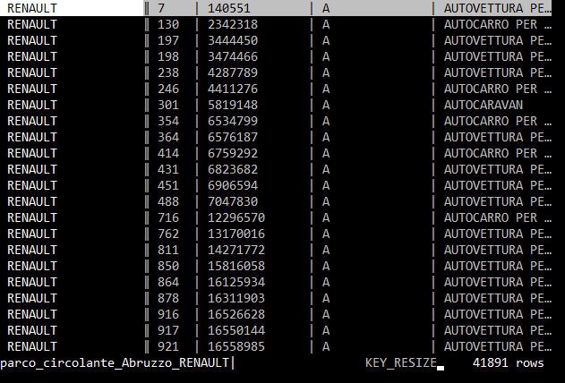
Dal foglio delle frequenze è possibile filtrare su più di un elemento:
- si selezionano ad esempio tre marche, pigiando
sper ognuna; - si chiude il foglio delle frequenze con
qe si torna al foglio dati; - si pigia
"e si ottiene una tabella filtrata con i dati relativi alle sole tre marche selezionate prima.
Filtro tramite espressione Python↵
È possibile filtrare righe tramite un'espressione Python (qui la documentazione ufficiale e qui una guida che consiglio).
Se ad esempio dalla tabella di sotto si volessero soltanto le province con più di 350.000 abitanti

basterebbe:
- per prima cosa impostare il campo
Popolazionecome numerico, pigiando #; - pigiare
z|per attivare il filtro tramite espressione Python; - scrivere l'espressione basata sulla colonna, che qui è
Popolazione>350000e poi premere INVIO.
In output si avrà la selezione di tutte le righe che risolvono l'espressione scritta.
Note:
- nel filtro per espressione c'è l'autocompletamento del nome colonna, quindi se si scrive ad esempio
Pope poi si fa click su TAB, viene restituito a schermoPopolazione; - è possibile scrivere espressioni complesse, che fanno riferimento a più colonne.
Filtro tramite espressione Python su campo datetime↵
È possibile filtrare righe tramite un'espressione Python a partire da campi datetime, dopo averli impostare come data.
Usando questo file CSV (by PCM-DPC), se ad esempio dalla tabella di sotto si volessero soltanto i record con giorno 29:

basterebbe:
- per prima cosa impostare il campo
datacome data, pigiando @; - pigiare
z|per attivare il filtro tramite espressione Python; - scrivere l'espressione basata sulla colonna, che qui è
data.day == 29e poi premere INVIO.
In output si avrà la selezione di tutte le righe che risolvono l'espressione scritta.
Osservazioni: oltre a day è possibile usare: month, yeare hour
Se si vogliono ad esempio selezionare soltanto righe con date nel futuro, l'espressione sarà data > datetime.datetime.now().
Filtri tramite espressioni python, basati su più colonne↵
Si vogliono ad esempio selezionare tutte le righe in cui il domicilio non è né a Palermo, né a Ragusa, ma la cui residenza è in una di queste due città.
A partire ad esempio da:
| domicilio | residenza |
|---|---|
| PA | PA |
| RG | RG |
| TO | TO |
| VE | PA |
Questa la procedura:
- pigiare
z|per selezionare tramite espressione Python; - scrivere
re.search("^(?!PA|RG).*", domicilio) and re.search("(PA|RG)", residenza); - premere INVIO.
La prima è una speciale condizione di regex, che cerca al negativo.
Sarà selezionata soltanto la riga seguente:
| domicilio | residenza |
|---|---|
| VE | PA |
Riepilogo dei dati↵
Uno dei modi per avere un riepilogo è usare il foglio delle frequenze (vedi qui).
È possibile generare un foglio delle frequenze anche basato su più colonne. Per farlo si impostano come colonne chiave (qui come fare) quelle che si vogliono trasformare in "foglio delle frequenze", e poi si pigia g+Shift+f. Qui sotto ad esempio un riepilogo per le coppie univoche di destinazione/alimentazione.

Aggiunta di aggregatori↵
I fogli di frequenza, oltre al conteggio per valori distinti, possono contenere altri calcoli. Gli "aggregatori" possibili sono min, max, avg / mean, median, q3/q4/q5/q10 (terzili/quartili/quintili/decili), sum, distinct, count e keymax.
Ad esempio per ogni provincia si può avere restituito la distribuzione di età per quartile e scoprire che il 50% del campione è compreso nella fascia di età tra i 18 e circa i 55 anni.
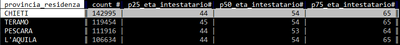
Per aggiungere l'aggregatore q4 al foglio delle frequenze, bisogna seguire questi passi:
- navigare sino alla colonna
eta_intestatarioe impostarla a numero intero con#; - premere
+e scrivere (in basso a sinistra)q4(per il calcolo dei quartili, quindi al 25, 50 e 75 percento); - navigare sino alla colonna
provincia_residenzae pigiareShift+f.
Inizierà da subito il calcolo (che non è immediato, sono più di un milione di righe) e alla fine si avrà qualcosa come l'immagine di sopra (non è fico VisiData?).
Il riepilogo globale↵
Per avere una visione a "volo d'uccello" sull'intera tabella esiste il comando Shift+i, che restituisce un riepilogo statistico per tutte le colonne.
Se prima di lanciarlo si definiscono correttamente i campi (ad esempio i numerici, come numerici), verranno eseguiti correttamente anche i calcoli per min, max, median, mean, stdev.
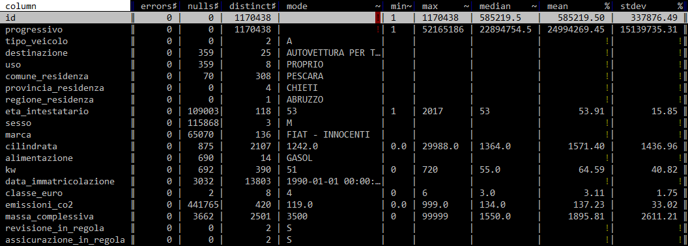
Questa è un'altra feature di grande comodità (presente in molte applicazione e ambienti per analisi dati), che verrà usata molto da chi lavorerà con VisiData.
Salvare un foglio↵
Per salvare un foglio si preme CTRL+s, poi si scrive il nome del file con estensione (nomeEsempio.csv) e infine si pigia Invio.
Fare il redirect dell'output verso lo stdout↵
Il comando
vd input.csv -b --save-filetype json | jq .
invierà ad esempio a jq un output JSON a partire dal CSV di input.
Se ad esempio si vuole passare l'output a grep:
vd input.csv -b --save-filetype tsv 2> /dev/null | grep 'a'
2> /dev/null per non avere stderr a schermo.
Fare JOIN tra tabelle↵
Se ad esempio si volesse calcolare il rapporto tra numero di mezzi e popolazione, sarebbe utile fare un JOIN con una tabella con i dati della popolazione residente.
I dati per provincia sono quelli di sotto e sono stati salvati in un file TSV denominato popolazioneAbruzzo.tsv (fonte ISTAT).
| Provincia | Popolazione |
|---|---|
| L'AQUILA | 300404 |
| TERAMO | 308284 |
| PESCARA | 319388 |
| CHIETI | 387120 |
Si può fare in questo modo:
- si parte da
vd parco_circolante_Abruzzo.csv; - si va sulla colonna
provincia_residenza; - si calcola il foglio delle frequenze pigiando
Shift+fe si ottiene

- si rinomina questo foglio frequenze premendo la barra spaziatrice, scrivendo il comando
rename-sheete dando poiInvio. E poi inserendo il nome nuovo (ad esempiomezziProvincia); - si apre la tabella con i dati sulla popolazione per provincia, pigiando
o, scrivendopopolazioneAbruzzo.tsv(che è il nome del file) e pigiandoInvio(NOTA BENE si può scrivere anche soltantopopoe poi pigiareTABe il nome del file verrà autocompletato). Si otterrà

- si va nella colonna
Provinciae si preme!per impostarla come colonna chiave. Il JOIN in VisiData viene fatto tra colonne chiave; - si apre il "foglio dei fogli" con
Shift+se si visualizzerà qualcosa come;
- si va nella riga che contiene lo sheet
popolazioneAbruzzoe si pigia INVIO; - si va di nuovo nella colonna
Provinciae si preme!per impostarla come colonna chiave; - si apre il "foglio dei fogli" con
Shift+s; - si selezionano con
sle due tabellemezziProvinciaepopolazioneAbruzzo; - si pigia
&che è il comando di JOIN e in basso a sinistra ci viene chiesto quale tipo si vuole applicare (nota bene: con VisiData >2.0 si deve premereCTRL + xe scegliere il tipo diJOIN);
- si scrive
innere si pigiaInvioe si ottiene una tabella che contiene sia il numero di mezzi per provincia, che il numero di abitanti.
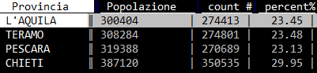
Da questa tabella a questo punto, semplificando un po', si potrebbe rapidamente calcolare il numero macchine per persona, in questo modo:
- si va nella colonna
Popolazionee si preme#per impostarla come numero intero; - si pigia
=(per creare una nuova colonna con valori frutto di un'espressione); - si scrive poi nel prompt
count/Popolazione(c'è l'autocompletamento conTABdei nomi delle colonne); - e si ottiene un risultato come quello di sotto.
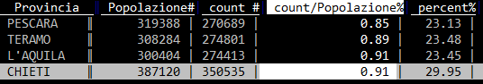
Concatenare tabelle↵
La concatenazione tra due o più tabelle con la stessa struttura si attiva tramite &. Ad esempio, a partire dai due file inputFileOne.csv e inputFileTwo.csv, presenti qui si procede in questo modo:
- si apre la shell e si va nella cartella che contiene i file da concatenare;
- si scrive
vde si premeInvio; - si seleziona la prima voce
DirSheet for the current directorye si premeinvio; - si selezionano con
si due file; - si preme
g Invioper aprirli entrambi; - si apre il foglio dei fogli con
Shift+s; - si selezionano
inputFileOne.csveinputFileTwo.csvcons; - si preme
&per attivare la concatenazione; - si preme
Ctrl+Xper il menu; - si seleziona
appende poi si premeInvio.
Si avrà a video l'unione dei due file di input (in questo video una replica di quanto descritto, per versioni vd < 2).
Tabelle Pivot↵
Ecco ad esempio come creare quella che da conto del numero di mezzi per marca, suddivisi per provincia:
- si va nella colonna
marcae si imposta come colonna chiave, premendo!; - si va poi nella colonna
provincia_residenzae si pigiaShift+w; - si ottiene la tabella pivot desiderata.
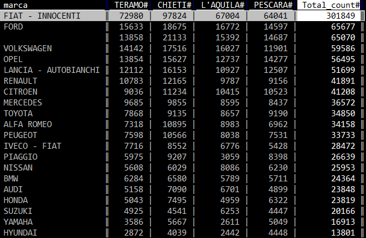
Se invece del conteggio delle occorrenze si volesse (a partire da un altro campo) calcolare un altro dato aggregato - come ad esempio l'età media per marca e provincia - si può procedere in questo modo:
- si va nella colonna
eta_intestatarioe si imposta a numero intero, pigiando su#; - si preme
+, poi in basso a sinistra nel prompt si scriveavge infine si dàInvio; si va di nuovo nella colonnaprovincia_residenzae si pigiaShift+w.
In output, per ogni provincia, si avrà quindi la media desiderata.

Creare un grafico di dispersione (scatter plot)↵
VisiData può stampare a schermo anche dei grafici XY. Non è un suo punto di forza, ma può essere utile per avere una prima e grezza visualizzazione spaziale dell'insieme dei dati.
Il requisito per crearne uno, è avere due colonne numeriche, da usare come coppia di coordinate. Qualcosa come quella di sotto.
| fid | X | Y |
|---|---|---|
| 1 | 12.29 | 43.76 |
| 2 | 12.16 | 43.64 |
| 3 | 12.15 | 43.65 |
| 4 | 12.16 | 43.63 |
| ... | ... | ... |
Per generare il grafico basterà seguire i seguenti passi:
- impostare come numeriche (numeri decimali digitando
%sulla colonna, o#per numeri interi) le due colonne con le coordinate; - impostare come colonna chiave la colonna con le ascisse, selezionandola e digitando
!; - selezionare la colonna con le ordinate e digitare
..
In output si avrà qualcosa come quella di sotto

Moduli Python↵
VisiData è un foglio elettronico basato su Python 3. Questo consente di utilizzare al suo interno la galassia dei moduli disponibili per Python.
Per farlo, bisogna precaricare questi moduli all'avvio di VisiData. Questo si realizza modificando il file di configurazione del programma - si chiama .visidatarc - contenuto nella cartella home dell'utente. Se si vuole ad esempio sfruttare il modulo datetime, si apre in modifica il file .visidatarc e si aggiunge la riga
from datetime import datetime
Poi si salva il file e si fa partire VisiData.
Se ad esempio si vuole fare un'analisi sulla data di immatricolazione per mese a partire dalla colonna data_immatricolazione e si volesse sfruttare il modulo datetime, si può procedere in questo modo:
- si va nella colonna
data_immatricolazione; - si preme
=; - si scrive nel prompt
datetime.strptime(data_immatricolazione, '%Y-%m-%d %H:%M:%S').monthe si pigiaInvio.
Si ottiene qualcosa come quella di sotto:
E a questo punto si può rinominare la colonna premendo ^, scrivendo "mese" e poi premendo Invio. E poi creare il foglio delle frequenze della colonna mese, pigiando Shift+f e scoprire che in Abruzzo si immatricola soprattutto a gennaio.
NOTA BENE: le funzioni del modulo datetime sono disponibili in modo nativo per le colonne già impostate (come tipo) a data. Quanto scritto sopra vale soprattutto come guida al come precaricare e utilizzare un modulo Python in VisiData.
Salvare un flusso di lavoro↵
Introduzione↵
In VisiData è possibile salvare il log delle operazione fatte e riutilizzarlo per applicarle nuovamente al file di input.
Se ad esempio a partire da questo file CSV (sotto l'anteprima) si volessero cancellare tutte le righe che contengono il solo carattere a nella prima colonna e infine salvare l'output, la procedura è:
vd input.csv;- posizionarsi nella prima colonna e pigiare | per attivare la selezione tramite espressione regolare, scrivere
^a$e premere INVIO. Verrà fatta la selezione descritta; - pigiare in sequenza g e d per cancellare le righe selezionate;
- poi CTRL+s;
- e infine scegliere un nome di output (ad esempio
output.csv) e pigiare INVIO per salvare il file.
| field1 | field2 |
|---|---|
| a | 0 |
| b | 3 |
| a | 4 |
| c | 5 |
Per salvare la procedura di sopra in un file di log, bisognerà premere CTRL+d, scegliere un nome per salvare il file (ad esempio cancella_le_a.vd) e pigiare INVIO.
Il file di log salvato avrà un contenuto come quello sottostante (è un file TSV), in cui sono "mappate" tutte le operazioni fatte:
| sheet | col | row | longname | input | keystrokes | comment |
|---|---|---|---|---|---|---|
| global | null_value | set-option | ||||
| open-file | input.csv | o | ||||
| input | field1 | select-col-regex | ^a$ | |||
| input | delete-selected | gd | delete (cut) selected rows and move them to clipboard | |||
| input | save-sheet | output.csv | ^S | save current sheet to filename in format determined by extension (default .tsv) |
Per riapplicare la stessa procedura al file, senza interagire con lo schermo, il comando da lanciare è:
vd -b -p cancella_le_a.vd
-bper eseguire VisiData senza attivarne l'interfaccia;-pper replicare un file di log.
Se questo comando si lancia dopo avere già creato il file di output, si avrà un messaggio di errore, che avvisa che il file esiste già e non può essere sovrascritto.
Per fare in modo che venga sovrascritto bisognerà aggiungere l'opzione -y:
vd -y -b -p cancella_le_a.vd
A schermo verrà restituito l'elenco delle operazione svolte:
opening cancella_le_a.vd as vd
"input.csv"
opening input.csv as csv
select rows matching regex in current column
"^a$"
search wrapped
2 matches for /^a$/
selected 2 rows
delete (cut) selected rows and move them to clipboard
copied 2 rows to clipboard
deleted 2 rows
save current sheet to filename in format determined by extension (default .tsv)
"output.csv"
saving 1 sheets to output.csv as csv
replay complete
Applicare lo stesso flusso a un file diverso, ma omologo↵
Spesso si ha la necessità di applicare una stessa procedura ad altri file, con la stessa struttura, ma con contenuti differenti.
Per utilizzare il file di log creato con un file diverso da input.csv, bisognerà modificare il file di log (si modifica con qualsiasi editor di testo):
- rimuovere la riga con il riferimento a
input.csv - rimuovere il riferimento al nome del foglio (qui è
input, come il nome del file).
Diventerà quindi:
| sheet | col | row | longname | input | keystrokes | comment |
|---|---|---|---|---|---|---|
| global | null_value | set-option | ||||
| field1 | select-col-regex | ^a$ | ||||
| delete-selected | gd | delete (cut) selected rows and move them to clipboard | ||||
| save-sheet | output.csv | ^S | save current sheet to filename in format determined by extension (default .tsv) |
Fatto questo, il comando da usare con un nuovo file denominato ad esempio input_nuovo.csv sarà:
vd -y -b -p cancella_le_a.vd input_nuovo.csv
In output verrà creato il file output.csv.
Se si vuole creare un file di output con nome diverso, si deve cancellare dal file di log la riga in cui si fa riferimento a output.csv e lanciare il comando:
vd -y -b -p cancella_le_a.vd input_nuovo.csv -o output_nuovo.csv
Nota sul file di log↵
Si tratta di un TSV, quindi è possibile leggerlo e modificarlo proprio con VisiData:
Soluzione problemi↵
Riga attiva di colore nero↵
Quando si usa VisiData su Windows Subsystem for Linux, la riga attiva risulta invisibile perché tutta nera.
Per fare in modo che torni "visibile" bisogna modificare il file di configurazione di VisiData. Questo file di default non esiste: si deve trovare nella home dell'utente (quindi in ~) e si deve nominare come .visidatarc.
Questi i passi:
## vai nella cartella home dell'utente
cd ~
## nano è un editor di testo, si installa con "sudo apt-get install nano.
## Si può esare usare qualsiasi editor per modificare il file
nano .visidatarc
Si aprirà il file .visidatarc a cui bisognerà aggiungere le stringhe sottostanti e poi salvare il file.
options.color_key_col=''
options.color_selected_row='yellow'
options.color_note_type='yellow'
options.color_graph_hidden='blue'
options.color_column_sep='blue'
options.null_value=""
options.color_key_col="blue"
Caratteri non leggibili in Windows Subsystem for Linux↵
Se si usa VisiData in Windows Subsystem for Linux, alcuni caratteri possono risultare non leggibili. Questo dipende dal font usato.
Per cambiarlo:
- click con il destro del mouse sulla barra;
- e scegliere Proprietà.
Infine si consiglia il font di sotto:

Ricette↵
Salvare una tabella HTML in CSV, a partire da una pagina web↵
In questo esempio il presupposto è che si voglia trasformare in CSV una tabella HTML presente in una pagina web, in cui ci sono più tabelle. Il punto di partenza è quello di estrarre dalla pagina sorgente, una pagina HTML che contiene soltanto la tabella di interesse.
La pagina di esempio è:
https://web.archive.org/web/20190618071304/http://www.sias.regione.sicilia.it/NHEOWLH140_00_1.html
Questa è composta da diverse tabelle.

Quella di interesse è l'unica composta da più di 7 colonne, e la query XPATH per estrarla è //table[count(tr/td)>7].
La pagina di origine ha l'encoding in ISO-8859-1, ed è da convertire in UTF-8.
Per scaricare la pagina, cambiarne l'encoding ed estrarre la tabella di interesse il comando può essere
curl "http://www.sias.regione.sicilia.it/NHEOWLH140_00_1.html" | \
iconv -f ISO-8859-1 -t utf-8 | \
scrape -be '//table[count(tr/td)>7]'
L'utility usata sopra per fare la query XPATH è scrape-cli.
In output si ha una pagina web che contiene soltanto la tabella di interesse.
Per passarla a VisiData bisognerà modificare così lo script:
curl "http://www.sias.regione.sicilia.it/NHEOWLH140_00_1.html" | \
iconv -f ISO-8859-1 -t utf-8 | \
scrape -be '//table[count(tr/td)>7]' | \
vd -f html
Come risultato si aprirà la finestra di sotto. Per aprire la tabella sarà necessario premere INVIO e poi si potrà salvare la tabella in CSV (o altri formati) digitando CTRL+ s.
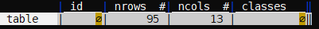
Se si vuole inserire nello script anche la procedura di salvataggio, bisogna modificare lo script in questo modo:
curl "http://www.sias.regione.sicilia.it/NHEOWLH140_00_1.html" | \
iconv -f ISO-8859-1 -t utf-8 | \
scrape -be '//table[count(tr/td)>7]' | \
vd -b -f html -o out.csv -p dive.vd
Note:
-bè per eseguire VisiData senza interfaccia;-p dive.vdper eseguire dei comandi (qui semplicemente l'apertura della tabella a partire dalla finestra iniziale di sopra).
Nel file dive.vd c'è il seguente contenuto.
sheet col row longname input keystrokes comment
open-file - o
- 0 dive-row ^J
Il file di sopra è un file di log di VisiData (vedi sezione dedicata). Tutte le operazioni fatte in VisiData finiscono in un log che può essere visualizzato e salvato. Quindi è possibile salvare la visualizzazione dell'elenco delle tabelle e poi l'apertura di quella di interesse.
Per creare questo di sopra:
- arrivare a visualizzare la tabella su VisiData;
- digitare
INVIO; - digitate
SHIFT + dper visualizzare il log dei comandi; - e infine
CTRL + sper salvare il filedive.vd.
Fare proposte e/o Chiedere supporto↵
Il luogo dove farlo è senz'altro questo https://github.com/saulpw/visidata/issues. È bene farlo scrivendo sempre la versione di VisiData utilizzata, allegare i dati per replicare eventuali problemi riscontrati, documentare la procedura che si vuole realizzare.
Note finali↵
Il grande Jeremy Singer Vine lo usa da molto più tempo di me e ha creato la migliore guida introduttiva dedicata in inglese https://jsvine.github.io/intro-to-visidata/, di cui sono felice di essere nei ringraziamenti. Ne ho attinto a piene mani per scrivere questo post e colgo l'occasione per ringraziarlo di cuore pubblicamente.
È un'applicazione molto bella, che probabilmente per alcuni diverrà (come è adesso per me) di uso quotidiano.
Jeremy afferma che per analisi complesse, analisi geospaziali, data literature è meglio usare altro. Mi sembra sensato.
Non sostituisce R o Pandas, ma li può certamente affiancare e spesso precedere nel workflow di lavoro sui dati. È un altro strumento che consiglio di aggiungere nella cassetta degli attrezzi.
Lo sviluppatore principale e chi collabora con lui sono molto attenti alle richieste e alle proposte che vengono dall'esterno, in una bella mescolanza di sensibilità "tecnologica" e umana.
In queste settimane ho aperto diverse issue a cui è stato dato sempre riscontro. Alcune erano richieste da uomo primitivo, altre erano buone: confesso di essere orgoglioso di avere avuto degli effetti nel rilascio dell'ultima versione (la 1.5.1) e di essere citato più volte nelle note di rilascio. Ringrazio molto Saul Pwanson e Anja Kefala.
A breve gli proporrò l'integrazione in lettura e scrittura dei (fatto)datapackage, in modo da estendere la qualità e le modalità di lavoro su dati ben descritti e strutturati.
Qui vorremmo aggiornare e arricchire nel tempo i testi e si accettano anche proposte di integrazioni, correzioni e modifiche.
URL consigliati↵
- la guida di Jeremy Singer Vine https://jsvine.github.io/intro-to-visidata/
- le ricette sul sito ufficiale http://visidata.org/docs/;
- la documentazione ufficiale http://visidata.org/man/;
- la playlist YouTube a cura dell'autore https://www.youtube.com/playlist?list=PLxu7QdBkC7drrAGfYzatPGVHIpv4Et46W;
- la lista visuale degli shortcut da tastiera http://visidata.org/docs/kblayout/.